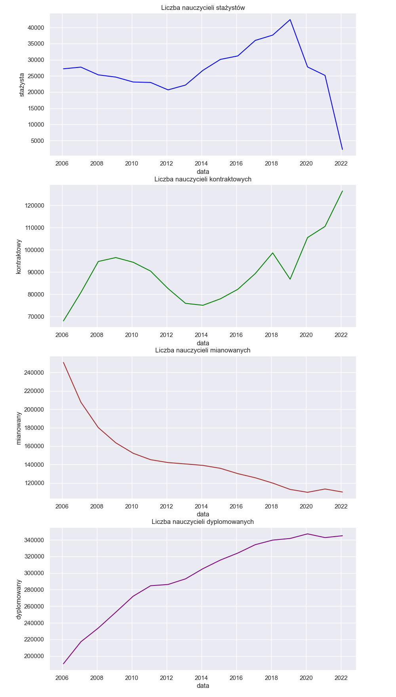
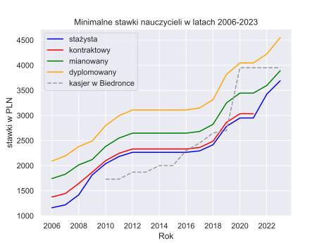
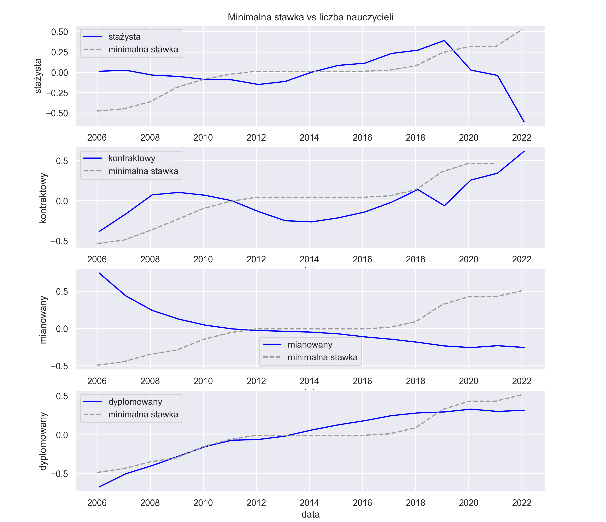

<div class="container mx-auto flex flex-wrap">
  <!-- Post Section -->
  <section class="w-screen items-center">
    <article class="max-w-none prose w-full">
      <div class="min-h-screen py-8 flex flex-col justify-center relative overflow-hidden lg:py-12">
        <div class="relative w-full px-6 py-12 md:max-w-6xl md:mx-auto lg:max-w-screen lg:pt-16 lg:pb-28">
          <div class="max-w-prose mx-auto lg:text-lg">

            <p class="mt-2">
              <time class="text-md text-gray-500 dark:text-white" datetime="2023-03-16">
                Kwiecień 16, 2023
              </time>
              <time class="ml-2 dark:text-gray-400" title="Czas przeczytania artykułu">15 min</time>
            </p>
            <h1 class="dark:text-gray-100">Polscy nauczyciele - ile ich jest, ile zarabiają?</h1>
          </div>
          <div class="mt-8 prose prose-slate mx-auto lg:prose-lg dark:text-gray-300">
            <p class="lead dark:text-zinc-400">Czy w Polsce brakuje nauczycieli? Jak wyglądają zarobki nauczycieli? Na
              te pytania postaram się odpowiedzieć w tym artykule za pomocą oficjalnych danych.</p>
            <p>Treść artykułu:</p>
            <ol>
              <li>Liczba nauczycieli w latach 2006-2022.</li>
              <li>Minimalna stawka nauczycieli w latach 2006-2023.</li>
              <li>Zależność pomiędzy minimalną stawką a liczbą nauczycieli.</li>
            </ol>
            <h2 class="dark:text-white">1. Liczba nauczycieli</h2>
            <h3 class="dark:text-white">2006-2022</h3>
            <p>W dzisiejszym artykule użyję danych ze strony <a class="dark:text-gray-300"
                href="https://dane.gov.pl/pl/dataset/811,nauczyciele-w-osobach-i-etatach/resource/45754/table?page=1&per_page=20&q=&sort=">https://dane.gov.pl</a>.
            </p>
            <p>Struktura danych wygląda następująco:</p>
            <iframe width="700" height="400" src="https://dane.gov.pl/embed/resource/45754" frameBorder="0"></iframe>
            <p>Krótki opis kolumn:</p>
            <ol>
              <li><b>Stan na dzień</b> - kiedy zostały pobrane dane,</li>
              <li><b>osoby_etaty</b> - są to dane kategoryczne (ang. categorical variables), więc występują tylko
                takie
                wartości jak:
                <ul>
                  <li><b>Osoby</b> = Pełnozatrudnieni + Niepełnozatrudnieni</li>
                  <li><b>Pełnozatrudnieni (użyte do wizualizacji)</b> - oznacza to, że taka osoba pracuje przez cały
                    standardowy czas pracy,
                    który
                    wynosi zazwyczaj 8 godzin dziennie przez 5 dni w tygodniu,</li>
                  <li><b>Niepełnozatrudnieni</b> - to znaczy, że taka osoba pracuje przez mniejszą liczbę godzin niż
                    osoba
                    pełnozatrudniona i nie ma zapewnionej pewności zatrudnienia,</li>
                  <li><b>Etat</b> - jest to liczba etatów, która odnosi się do liczby pełnych etatów pracy, jakie
                    instytucja
                    ma do dyspozycji. Określa ona liczbę nauczycieli zatrudnionych na pełny etat (pełnozatrudnionych),
                    którzy pracują
                    zazwyczaj 8 godzin dziennie przez 5 dni w tygodniu,</li>
                </ul>
              </li>
              <li><b>Niewypełniony</b> - liczba osób, które nie zaznaczyły rodzaju swojego stopnia zawodowego,</li>
              <li><b>Stażysta</b> - nauczyciel stażysta,</li>
              <li><b>Kontraktowy</b> - to nauczyciel zatrudniony na określony czas lub określony zakres przedmiotów,
              </li>
              <li><b>Mianowany</b> - nauczyciel, który odbył przynajmniej 2 lata stażu, i zdał pozytywnie egzamin na
                nauczyciela mianowanego,
              </li>
              <li><b>Dyplomowany</b> - posiada tytuł zawodowy na podstawie zdania egzaminu
                dyplomowego lub uzyskał stopień naukowy.</li>
            </ol>
            </p>
            <p>A tak wygląda liczba nauczycieli pełnozatrudnionych w latach 2006-2022:</p>
            
            <p>Zaczynając od nauczycieli stażystów, ich liczba drastycznie zmalała. W roku 2019 było ich około 40 000,
              a w roku 2022 około 4000.</p>
            <p>Zaczynając od nauczycieli stażystów, ich liczba znacznie spadła. W roku 2019 było ich około 40 000, a w
              roku 2022 około 4000. W wyniku spadku liczby stażystów, liczba nauczycieli kontraktowych systematycznie
              wzrastała w kolejnych latach (2020-2022). Zależność jest prosta: skoro jest mniej nowych nauczycieli, ich
              zadania muszą przejmować starsi nauczyciele już pracujący.

              Później mamy nauczycieli mianowanych i dyplomowanych. Jak widać na wykresie, te obydwie grupy są ze sobą
              silnie powiązane - gdy jedna z nich wzrasta, druga spada. Oznacza to, że liczba nauczycieli mianowanych
              maleje w wyniku podniesienia ich stopnia zawodowego (z nauczycieli mianowanych stają się dyplomowanymi),
              co skutkuje wzrostem liczby nauczycieli dyplomowanych. Jeśli liczba nauczycieli mianowanych nie zwiększy
              się, to w najbliższych latach liczba nauczycieli dyplomowanych będzie się zmniejszać.</p>
            <h2 class="dark:text-white">2. Minimalna stawka nauczycieli</h2>
            <h3 class="dark:text-white">2006-2023</h3>
            <p>Zgodnie z danymi opublikowanymi na stronach rządowych, minimalne stawki
              nauczycieli zależą od ich stażu pracy i wykształcenia. 
              Dla porównania zarobków nauczycieli, użyto płacy minimalnej sprzedawców w supermarkecie Biedronka.
              Przykładowe minimalne stawki nauczycieli oraz kasjerów na
              podstawie lat wyglądają następująco:</p>
            <table>
              <tr>
                <th>rok</th>
                <th>stażysta (początkujący)</th>
                <th>kontraktowy</th>
                <th>mianowany</th>
                <th>dyplomowany</th>
                <th>kasjer</th>
              </tr>
              <tr>
                <td>2006</td>
                <td>1160</td>
                <td>1375</td>
                <td>1742</td>
                <td>2090</td>
                <td></td>
              </tr>
              <tr>
                <td>2009</td>
                <td>1815</td>
                <td>1869</td>
                <td>2121</td>
                <td>2492</td>
                <td></td>
              </tr>
              <tr>
                <td>2010</td>
                <td>2039</td>
                <td>2099</td>
                <td>2383</td>
                <td>2799</td>
                <td>1730</td>
              </tr>
              <tr class="text-center">
                <td>...</td>
                <td>...</td>
                <td>...</td>
                <td>...</td>
                <td>...</td>
                <td>...</td>
              </tr>
              <tr>
                <td>2019</td>
                <td>2782</td>
                <td>2862</td>
                <td>3250</td>
                <td>3817</td>
                <td>2700</td>
              </tr>
              <tr>
                <td>2020</td>
                <td>2949</td>
                <td>3034</td>
                <td>3445</td>
                <td>4046</td>
                <td>3950</td>
              </tr>
              <tr>
                <td>2022</td>
                <td>3424</td>
                <td></td>
                <td>3597</td>
                <td>4224</td>
                <td>3950</td>
              </tr>
              <tr>
                <td>2023</td>
                <td>3690</td>
                <td></td>
                <td>3890</td>
                <td>4550</td>
                <td>3950</td>
              </tr>
              </tbody>
            </table>
            <figure>
              
              <figcaption>Są to zarobki minimalne, a nie średnie. Wykres nie uwzględnia inflacji.</figcaption>
            </figure>
            <p>Jak widać po powyższym wykresie, przedstawiającym zmiany w zarobkach nauczycieli w Polsce, można
              zauważyć, że w latach 2006-2012 oraz 2018-2022 zarobki nauczycieli rosły, natomiast w latach 2012-2016
              utrzymywały się na stałym poziomie. Natomiast od pewnego czasu pracownicy supermarketu Biedronka mogą się
              szczycić minimalnym wynagrodzeniem większym niż nauczyciele stażyści i mianowani.</p>
            <h2 class="dark:text-white">3. Zarobki i liczba nauczycieli</h2>
            <h3 class="dark:text-white">2006-2022</h3>
            <p>Jak wygląda związek płac z liczbą nauczycieli przedstawiono tutaj: </p>
            
            <p>Wykresy przedstawione powyżej wskazują, że wynagrodzenie nauczycieli przez lata było podnoszone, jednak
              nie przyczyniło się to do aż tak drastycznego wzrostu liczby nauczycieli.</p>
            <p>Wysokość płacy, choć ważna, nie jest jedynym czynnikiem wpływającym na spadek liczby nauczycieli w
              Polsce. Niemniej jednak, wynagrodzenie jest jednym z głównych czynników kształtujących popyt na pracę w
              zawodzie nauczyciela. Przy wyższych zarobkach nauczycieli, mogłaby wzrosnąć konkurencja na rynku pracy, a
              co za tym idzie - liczba osób zainteresowanych pracą w tym zawodzie.</p>
            <p>Podsumowując, liczba nauczycieli w Polsce odnotowuje spadek w ostatnich latach. Jeśli ten trend się
              utrzyma, przyszli uczniowie mogą napotkać trudności związane z brakiem wykwalifikowanej kadry
              nauczycielskiej, a za jakościową edukację trzeba będzie płacić.</p>
            <h3 class="dark:text-white">Kod użyty do analizy</h3>
            <pre><code class="language-py">import pandas as pd
import seaborn as sns
import matplotlib.pyplot as plt
import matplotlib.dates as mdates

sns.set_context("notebook")
sns.set_style("darkgrid")

df = pd.read_csv('data.csv')
df = df.drop('0.Niewypełniony', axis=1)
df = df.drop(df[(df.osoby_etaty=='Osoby') | (df.osoby_etaty=='Etaty') |
            (df.osoby_etaty=='Niepełnozatrudnieni')].index)
df['osoby_etaty'] = df['osoby_etaty'].replace({'Etaty': 'Razem'})
df.rename(columns={
    'osoby_etaty': 'Rodzaj etatu',
    'Stan na dzień': 'data',
    '1.Stażysta': 'stażysta',
    '2.Kontraktowy': 'kontraktowy',
    '3.Mianowany': 'mianowany',
    '4.Dyplomowany': 'dyplomowany',
    'Razem': 'razem',
}, inplace=True)
df['data'] = pd.to_datetime(df['data'], format="%d.%y.%Y r.", errors='ignore')

zarobki = pd.read_csv('zarobki.csv')
zarobki['rok'] = pd.to_datetime(zarobki['rok'], format="%Y", errors='coerce')

def wykres_liczby_nauczycieli(y_in):
    plt.gca().xaxis.set_major_formatter(mdates.DateFormatter('%Y'))
    plt.gca().xaxis.set_major_locator(mdates.YearLocator())
    sns.lineplot(data=df, x="data", y=y_in, hue='Rodzaj etatu')
    plt.xlabel('Data')
    plt.ylabel('Liczba')
    plt.title(f'Liczba nauczycieli {y_in} w latach 2006-2022')
    plt.show()

def wykres_stopien_vs_zarobki(y_in, axes, i):
    # normalize data
    zarobki[y_in] = (zarobki[y_in] - zarobki[y_in].mean())/
                    (zarobki[y_in].max() - zarobki[y_in].min())
    df[y_in] = (df[y_in] - df[y_in].mean())/(df[y_in].max() - df[y_in].min())

    sns.lineplot(data=df, x='data', y=y_in, color='blue', label=y_in, ax=axes[i])
    sns.lineplot(data=zarobki, x='rok', y=y_in, color='0.6', 
                linestyle='--', label=f'minimalna stawka', ax=axes[i])
    return axes

def pokaz_wykres(plot):
    stopnie = df.columns.to_numpy()[2:]
    stopnie = stopnie[:len(stopnie)-1]
    fig, ax  = plt.subplots(nrows=len(stopnie))
    for i, stopien in enumerate(stopnie):
        ax = plot(stopien, ax, i)
    fig.set_size_inches(10.5, 10.5, forward=True)
    ax[0].set_title('Minimalna stawka vs liczba nauczycieli')
    fig.savefig("plot.png", format="png", dpi=300)

def pokaz_wszystkie_razem():
    fig, axes = plt.subplots(2, 2)
    sns.lineplot(data=df, x='data', y='stażysta', color='blue', ax=axes[0, 0])
    sns.lineplot(data=df, x='data', y='kontraktowy', color='green', ax=axes[0, 1])
    sns.lineplot(data=df, x='data', y='mianowany', color='brown', ax=axes[1, 0])
    sns.lineplot(data=df, x='data', y='dyplomowany', color='purple', ax=axes[1, 1])
    #fig.set_size_inches(18.5, 10.5, forward=True)
    #fig.savefig("plot.svg", format="svg", dpi=1000)
    fig.show()

pokaz_wykres(wykres_stopien_vs_zarobki)
              </code></pre>

            <p class="text-gray-400">Wszelkie niezgodności lub nieprawidłowości proszę zgłosić na naszego maila:
              datachaint@gmail.com. Za
              wszelkie błędy przepraszamy. </p>
            <h4 class="text-gray-400">Źródła:</h4>
            <a class="dark:text-gray-300" href="https://pracawbiedronce.pl/wynagrodzenia-pracownikow/">Zarobki
              kasjera</a>
            <a class="dark:text-gray-300"
              href="https://isap.sejm.gov.pl/isap.nsf/download.xsp/WDU20230000352/O/D20230352.pdf">Zarobki 2023</a>
            <a class="dark:text-gray-300"
              href="https://isap.sejm.gov.pl/isap.nsf/download.xsp/WDU20220001798/O/D20221798.pdf">Zarobki 2022</a>
            <a class="dark:text-gray-300"
              href="https://isap.sejm.gov.pl/isap.nsf/download.xsp/WDU20210000787/O/D20210787.pdf">Zarobki 2021</a>
            <a class="dark:text-gray-300"
              href="https://isap.sejm.gov.pl/isap.nsf/download.xsp/WDU20200001491/O/D20201491.pdf">Zarobki 2020</a>
            <a class="dark:text-gray-300"
              href="https://isap.sejm.gov.pl/isap.nsf/download.xsp/WDU20190001587/O/D20191587.pdf">Zarobki 2019</a>
            <a class="dark:text-gray-300"
              href="https://isap.sejm.gov.pl/isap.nsf/download.xsp/WDU20180000638/O/D20180638.pdf">Zarobki 2018</a>
            <a class="dark:text-gray-300"
              href="https://isap.sejm.gov.pl/isap.nsf/download.xsp/WDU20170000630/O/D20170630.pdf">Zarobki 2017</a>
            <a class="dark:text-gray-300"
              href="https://isap.sejm.gov.pl/isap.nsf/download.xsp/WDU20160001029/O/D20161029.pdf">Zarobki 2016</a>
            <a class="dark:text-gray-300"
              href="https://isap.sejm.gov.pl/isap.nsf/DocDetails.xsp?id=WDU20150000868">Zarobki 2015</a>
            <a class="dark:text-gray-300"
              href="https://isap.sejm.gov.pl/isap.nsf/DocDetails.xsp?id=wdu20140000922">Zarobki 2014</a>
            <a class="dark:text-gray-300"
              href="https://isap.sejm.gov.pl/isap.nsf/DocDetails.xsp?id=WDU20130000913">Zarobki 2013</a>
            <a class="dark:text-gray-300"
              href="https://isap.sejm.gov.pl/isap.nsf/DocDetails.xsp?id=WDU20120000790">Zarobki 2012</a>
            <a class="dark:text-gray-300"
              href="https://isap.sejm.gov.pl/isap.nsf/DocDetails.xsp?id=WDU20111610967">Zarobki 2011</a>
            <a class="dark:text-gray-300"
              href="https://isap.sejm.gov.pl/isap.nsf/DocDetails.xsp?id=WDU20101310885">Zarobki 2010</a>
            <a class="dark:text-gray-300"
              href="https://isap.sejm.gov.pl/isap.nsf/DocDetails.xsp?id=WDU20090520422">Zarobki 2009</a>
            <a class="dark:text-gray-300"
              href="https://isap.sejm.gov.pl/isap.nsf/DocDetails.xsp?id=WDU20080420257">Zarobki 2008</a>
            <a class="dark:text-gray-300"
              href="https://isap.sejm.gov.pl/isap.nsf/DocDetails.xsp?id=WDU20070560372">Zarobki 2007</a>
            <a class="dark:text-gray-300"
              href="https://isap.sejm.gov.pl/isap.nsf/DocDetails.xsp?id=WDU20060430293">Zarobki 2006</a>
          </div>
        </div>
    </article>
  </section>
</div>
